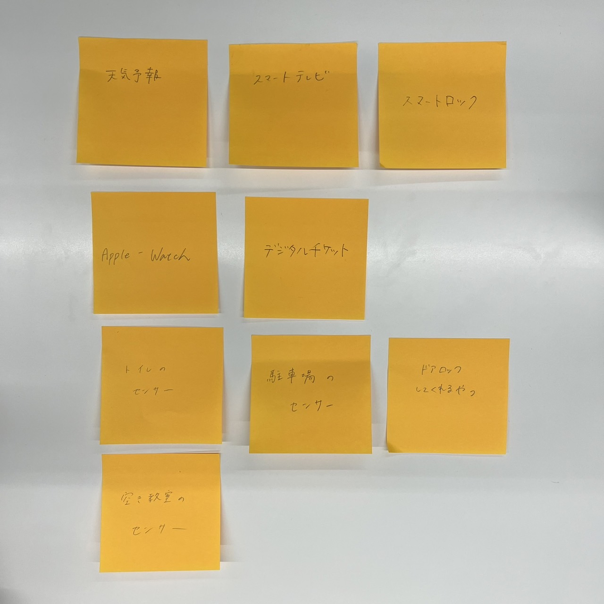
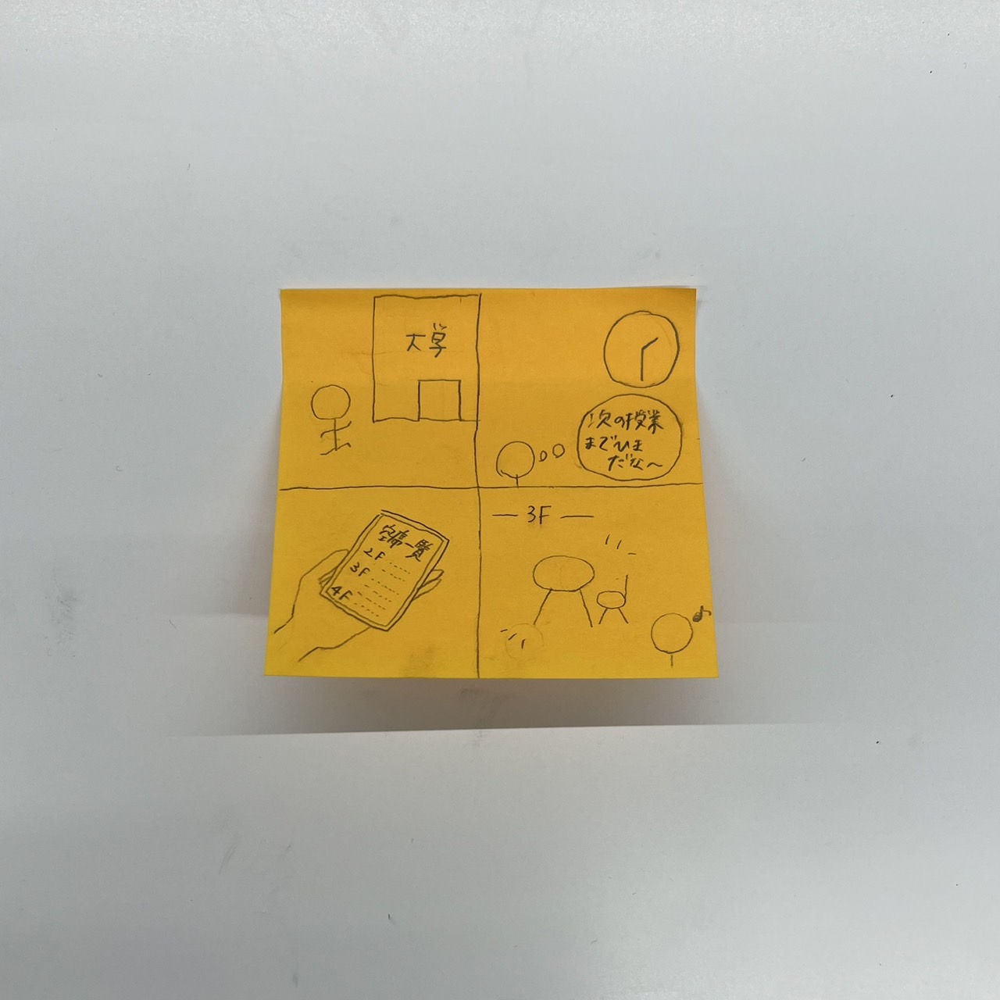

IoTに関して
IoTとは何か
IoTとは、モノをインターネットにつなぐこと。
モノが通信機能を保有しており、情報をインターネット経由で送受信することができる。
IoTで何ができる？（グループ）

グループでは、スマートロックやスマートテレビなどスマートホームにまつわるものや、さまざまなセンサーが挙げられた。
IoTで何ができる？（個人）

大学内にあるラーニングコモンズなどの空席が一目で分かるアプリがあったら良いのではないかと考えた。